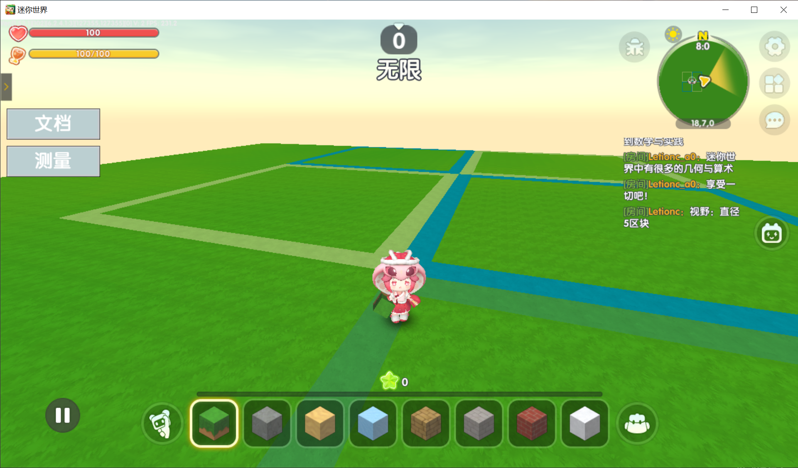

块 ( 个人简称 B Block )
一个方块，是一个块。
一万个方块，是一个岛！
方块组成了区块。
区块 ( 个人简称 UB UnitBlock )
进入 “数学与游戏 - math2fight” ，走动时会标记你正在走过的区块。( 不会重复标记 )
在迷你世界中，区块是构成地图的基本单位。一个区块的尺寸为 16×256×16 个方块。
右上角地图更新需要渲染，渲染需要区块计算。
它似无形，却又有形。

游戏刻 ( 个人简称 T Tick )
游戏刻是迷你世界中时间的基本单位。每秒钟有 20 个游戏刻。( 每个游戏刻 0.05 秒 )
用俗话说：
ScriptSupportEvent:registerEvent([=[Game.RunTime]=],fun)
-- 世界Tick变化 second,ticks
这可不是一分一秒的流逝，是1/20秒的流逝。